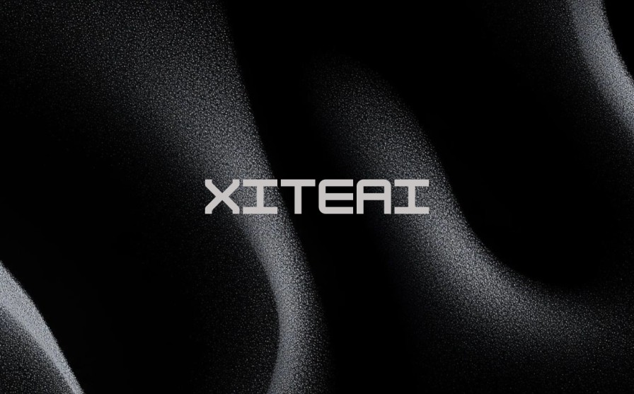
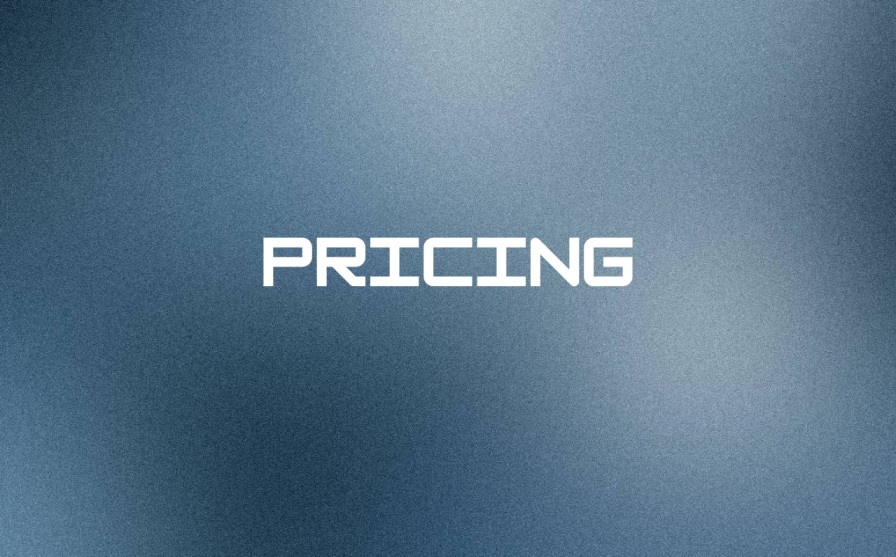
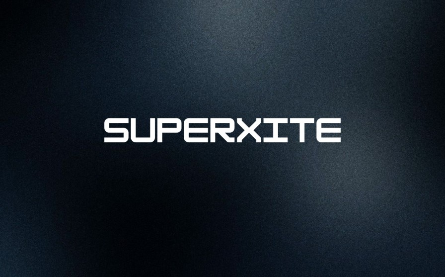
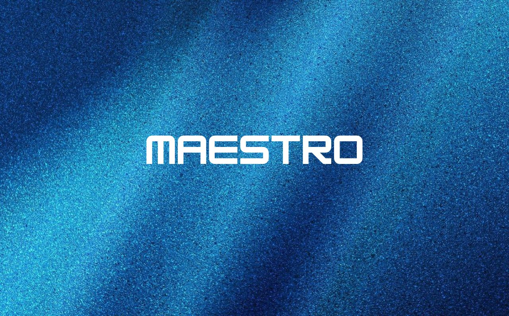
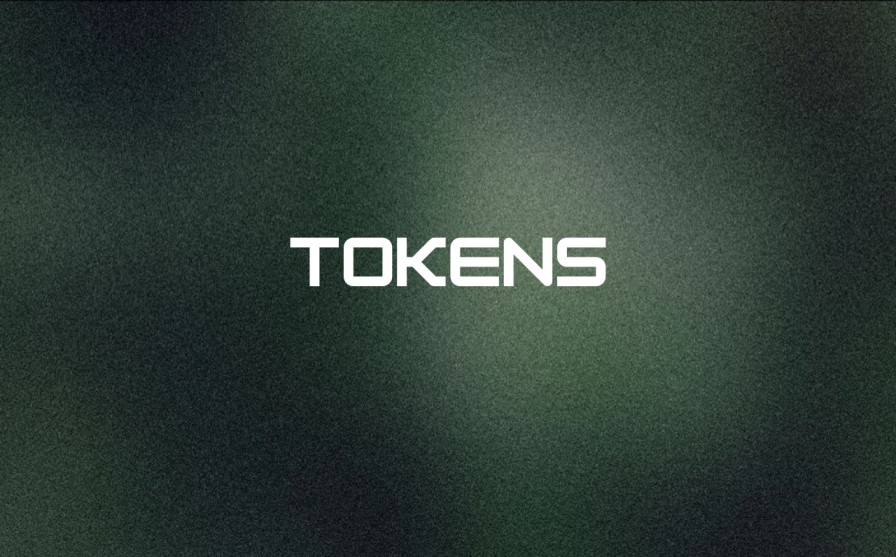
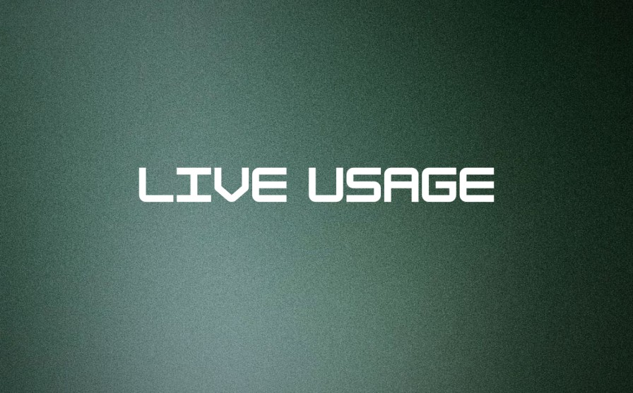

Overview
Last Updated: September 21, 2025, 11:04 PM IST
Welcome to the official XiteAI Documentation, a comprehensive and meticulously crafted resource designed to guide users through the intricacies of our Minimum Viable Product (MVP) phase. Developed by XiteAI Technologies, a visionary leader in the field of artificial intelligence, this platform represents a cutting-edge fusion of advanced language models including OpenAI's GPT-5, Anthropic's Claude 4, and xAI's Grok 4. These are seamlessly integrated with innovative features such as persona-driven conversational AI, sophisticated deep research capabilities, and the proprietary SuperXite Lite multi-agent system. This documentation is tailored to serve a diverse audience, ranging from individual enthusiasts utilizing the complimentary Essentials tier to enterprise clients leveraging the robust capabilities of our Prime and Ultimate Power plans.
Accessibility is a cornerstone of our design, with the platform available across multiple channels including the official XiteAI website XiteAI Home, dedicated iOS and Android applications. This resource serves as an authoritative companion, offering in-depth insights into the onboarding process, detailed specifications of our AI models, a transparent breakdown of pricing structures, and comprehensive usage guidelines. Presented in a professional tone with an emphasis on clarity and sophistication, each section is structured to enhance your interaction with XiteAI, providing the tools and knowledge necessary to maximize its potential during this pivotal MVP phase. As we continue to refine our offerings based on invaluable user feedback, this documentation will evolve, ensuring it remains a cornerstone of your XiteAI journey with regular updates to reflect new features, enhancements, and optimizations.
Introduction
What is XiteAI?
XiteAI, a flagship initiative by XiteAI Technologies, marks a significant milestone in the evolution of artificial intelligence, launched strategically during its Minimum Viable Product (MVP) phase to deliver an unparalleled and transformative user experience. Grounded in a steadfast commitment to truth-seeking and technological innovation, XiteAI harnesses a sophisticated ensemble of state-of-the-art language models, including OpenAI's GPT-5, Anthropic's Claude 4, and xAI's Grok 4. These are augmented by an array of cutting-edge tools such as persona-driven conversational interfaces, real-time deep research functionalities, and the innovative multi-agent SuperXite Lite system. This combination is engineered to cater to an expansive range of applications, from casual exploration by individual users to mission-critical tasks undertaken by professionals across various industries.
What sets XiteAI apart from conventional AI platforms is its user-centric philosophy, underscored by seamless accessibility through our elegantly designed web portal and dedicated mobile applications for both iOS and Android devices. During this MVP phase, we are diligently collecting and analyzing user insights to refine and elevate the platform's capabilities, positioning XiteAI as a future industry leader. Whether you are a creative professional seeking inspiration, a researcher requiring precise and comprehensive data synthesis, or a business leader optimizing strategic decision-making processes, XiteAI is architected to adapt dynamically to your unique requirements. This foundational approach, built on scalability, collaborative community input, and a forward-looking vision, is poised to evolve with emerging technological advancements, ensuring long-term value, relevance, and excellence.
Online Search Models
XiteAI elevates live search functionality with a sophisticated array of specialized models, each optimized for real-time data retrieval, synthesis, and analysis to meet diverse professional demands during our MVP phase:
perplexity/sonar-deep-research
Engineered specifically for deep research applications, this model integrates real-time web crawling, multi-source synthesis, rigorous fact-checking, and long-form reasoning. It is the preferred choice for academic research, legal analysis, technical documentation, and market intelligence.
perplexity/sonar-pro
Designed for speed and real-time accuracy, this model leverages advanced retrieval algorithms and summarization techniques across multiple domains. It strikes an impeccable balance of computational power and operational efficiency, catering to users needing swift and reliable results.
openai/gpt-4o:online
A robust model tailored for online search tasks, this offering provides advanced capabilities for information retrieval and synthesis, ensuring versatility for dynamic and evolving queries.
openai/gpt-4o-mini-search-preview
A lightweight preview model optimized for quick search operations, delivering efficient performance at a reduced cost, making it ideal for preliminary explorations and testing.
openai/gpt-4o-search-preview
A preview iteration of GPT-4o customized for search functionalities, maintaining high-quality synthesis for early adopters and testers.
perplexity/sonar-reasoning
Focusing on structured logic and factual correctness, this model enhances search experiences with advanced reasoning capabilities, offering a cost-effective option for detailed analysis.
perplexity/sonar
A fast-response general-purpose model, ideal for rapid factual queries and daily knowledge tasks, offering cost-effective performance suitable for routine information needs.
perplexity/sonar-reasoning-pro
An advanced model for sophisticated search tasks, providing enhanced retrieval and synthesis capabilities, designed for users requiring in-depth and nuanced results.
Think Models
XiteAI's Think Mode is empowered by a select group of specialized models, each engineered for profound reasoning, critical analysis, and strategic decision-making to enhance your intellectual pursuits during the MVP phase:
Claude Sonnet 3.7 Thinking
Optimized for exceptional depth and clarity, this model excels in critical thinking, structured logical frameworks, and analytical tasks, positioning it as an ideal solution for complex problem-solving, detailed evaluations, and strategic planning initiatives.
o3 pro
A pro-tier evolution of the O3 model, this version delivers enhanced accuracy, deeper reasoning capabilities, and superior performance for demanding workloads, making it a premier choice for strategic insights, long-term planning, and high-stakes decision-making processes.
Gemini 2.5 Pro
Google's flagship model, Gemini 2.5 Pro, is designed for advanced reasoning, multimodal task execution, and enterprise-grade performance, significantly augmenting think-mode capabilities with robust and scalable analysis tailored to large-scale organizational needs.
Pricing
XiteAI presents a meticulously structured pricing framework, designed to accommodate a broad spectrum of user needs with flexibility, transparency, and premium value during our MVP phase:
Essentials (Free)
Intended for new users and enthusiasts to explore XiteAI's foundational capabilities at no cost, this tier includes a 8,000 token window, 3 premium model messages per day, 240 mini model messages per day, 5 persona chats, 5 web searches per day, and 40 SuperXite messages per day. This plan serves as an excellent entry point for casual users or those conducting initial platform evaluations, offering a robust introduction to our ecosystem with no financial commitment required. Visit Pricing for more details
Prime (₹599/month)
Priced at ₹599 per month, this plan is tailored for regular users seeking advanced functionalities and enhanced performance. It provides a 32,000 token window, 100,000 premium tokens per day, unlimited mini model messages, comprehensive access to deep research and think mode features, unlimited web searches, local and cloud storage options, unlimited persona configurations, and 100 SuperXite messages per day. Ideal for professionals, creatives, and enthusiasts aiming to optimize productivity and unlock the full spectrum of premium capabilities. Visit Pricing for more details
Ultimate Power (₹2,300/month)
Offered at ₹2,300 per month, this plan is engineered for power users and business entities requiring enterprise-grade solutions. It encompasses all Prime features, augmented by enhanced token limits for extensive usage, priority processing for expedited responses, advanced workflow integrations for seamless operations, premium support with dedicated account management, and 200 SuperXite messages per day. This tier is perfectly suited for critical projects, large-scale deployments, and strategic business applications that demand unparalleled performance and reliability. Visit Pricing for more details
Payment options include UPI, credit and debit cards for instant processing, as well as bank transfers with a processing duration of 2-3 business days to accommodate various financial preferences. Detailed invoices and comprehensive usage analytics are accessible via the XiteAI platform, with dedicated support available at support@xiteai.com or incxiteai@gmail.com for billing inquiries, payment disputes, or assistance with account upgrades. Visit Pricing for more details
SuperXite
SuperXite stands as the pinnacle of XiteAI's innovative architectural design, a sophisticated multi-agent AI system that redefines efficiency, quality, and scalability during our MVP phase. By orchestrating multiple optimized models into a unified and cohesive framework, this proprietary technology delivers premium-grade results with remarkable computational efficiency, positioning it as a transformative asset for users across all subscription tiers, from casual explorers to enterprise-level professionals.
Operational Framework:Prompt Enhancement: The system meticulously refines user inputs to optimize clarity and contextual relevance, ensuring precise interpretation and alignment with intended outcomes for maximum effectiveness.
Parallel Processing: Engages five specialized AI engines concurrently, leveraging diverse perspectives and comprehensive data coverage to enrich response quality and provide a multi-dimensional analytical approach.
Decision Refinement: A premium decider AI conducts a multi-factor analysis, evaluating and refining responses to select the most accurate, contextually appropriate, and professionally polished output.
Seamless Delivery: Provides fast, high-quality results with an elegantly concealed layer of complexity, emulating the collaborative expertise of a seasoned professional panel to deliver a streamlined user experience.
Usage Allocations:
1. Essentials: 40 messages per day, designed for introductory exploration and basic needs, allowing users to familiarize themselves with the system's capabilities.
2. Prime: 100 messages per day, supporting regular advanced tasks with enhanced capacity for sustained professional use.
3. Ultimate Power: 200 messages per day, catering to intensive professional demands and large-scale operations that require extensive interaction and processing power.
SuperXite is engineered to elevate the user experience by delivering reliable, high-performance AI interactions, with a strategic roadmap to expand its feature set, improve performance metrics, and integrate additional functionalities based on insights gathered during the MVP phase and beyond.
Maestro
Maestro is XiteAI’s intelligent orchestration system, a groundbreaking feature designed to simplify and enhance user interactions by dynamically routing queries to the most suitable AI model during our MVP phase. Acting as a central conductor, Maestro intelligently analyzes user inputs, matches them to specialized models based on task requirements, and delivers precise, high-quality responses with seamless efficiency. This proprietary technology ensures that users, from casual explorers to enterprise professionals, experience effortless access to XiteAI’s diverse model portfolio without needing to navigate its complexities.
Operational Framework:Query Analysis: Maestro’s core AI, a fast and accurate model, evaluates the user’s prompt for intent, complexity, and domain specificity, ensuring optimal model selection for each task.
Model Matching: Leveraging a comprehensive API registry of models with defined specialties (e.g., MathematicsMinerva for math, perplexity/sonar for real-time search), Maestro routes the query to the most appropriate model or combination of models for superior accuracy.
Contextual Memory: Integrates global and persona-specific memory logs to maintain continuity, tailoring responses based on prior interactions while supporting isolated persona chats for customized experiences.
Seamless Execution: Delivers responses with minimal latency, concealing the intricate orchestration process to provide a fluid, professional-grade user experience across all subscription tiers.
Supported Specialties:
Maestro connects to an extensive range of specialized models, including:
Mathematics: MathematicsMinerva, DeepSeek-Math, MathGPT, Wolfram Alpha, OpenAI GPT-4 Math for advanced mathematical reasoning and problem-solving.
Physics: Physics-Informed GPT-4, NVIDIA Modulus, DeepPhysics AI, FourCastNet, OpenAI GPT-4 for physics-related reasoning and simulations.
Chemistry: IBM RXN, DeepChem, ChemCopilot, Schrödinger AI, OpenAI GPT-4 for reaction prediction and molecular modeling.
Biology: NVIDIA BioNeMo, Google MedGemma, DeepBio AI, OpenAI GPT-4, AlphaFold for genomics and bioinformatics.
Language & Grammar: Grammarly AI, QuillBot, LanguageTool, OpenAI GPT-4, Google Gemini for writing and style correction.
Reasoning & Logic: Minerva, DeepSeek-Math, Anthropic Claude, OpenAI GPT-4, Google Gemini for abstract and ethical reasoning.
Translation: Google Translator, DeepL, Meta NLLB-200, OpenAI GPT-4, Microsoft Translator for multilingual tasks.
Healthcare: MedGemma, Corti AI, OpenAI GPT-4 Med, DeepMind MedPaLM for medical knowledge and analytics.
Law: Westlaw Edge, Lexis+ AI, Harvey Legal AI, CaseMine, OpenAI GPT-4 Legal for legal research and drafting.
Finance: Arya Sentiment AI, Bloomberg GPT, Google Gemini Fin, OpenAI GPT-4 Fin, AWS FinTech AI for financial analysis.
Engineering: Leo AI, ANSYS AI, NeuralConcept, OpenAI GPT-4 Eng, Autodesk AI for design and simulation.
Usage Allocations:
1. Essentials: Access to basic Maestro routing with 40 queries per day, ideal for introductory exploration.
2. Prime: Enhanced Maestro routing with 100 queries per day, supporting advanced tasks and professional workflows.
3. Ultimate Power: Priority Maestro routing with 200 queries per day, designed for intensive, enterprise-grade operations.
Maestro is architected to deliver unparalleled precision and simplicity, with ongoing enhancements planned based on MVP feedback, including expanded model integrations, refined routing algorithms, and advanced contextual memory features to further elevate its performance and user value.
Consumption & Limits
XiteAI employs a sophisticated token-based consumption model to govern usage effectively, where tokens quantify the volume of text processed, encompassing prompts, completions, and system-generated formatting. This structured approach ensures equitable resource allocation, maintains platform stability, and provides users with a clear understanding of their usage patterns across all plans during the MVP phase.
Token Composition:Prompt Tokens: Assessed for input text, reflecting the complexity, length, and intricacy of user queries to ensure fair evaluation.
Completion Tokens: Evaluated for generated responses, determined by output length and the selected model's processing requirements, providing transparency in resource usage.
Plan-Specific Thresholds: The Essentials plan provides a 8,000 token limit, the Prime plan offers 32,000 tokens, and the Ultimate Power plan includes elevated limits to accommodate extensive and continuous usage scenarios, tailored to user needs.
Rate Limit Policies:
Each subscription tier enforces daily caps on messages and tokens to maintain optimal platform performance and prevent overloading. Exceeding these thresholds may trigger a temporary restriction, indicated by an Error 429, prompting users to adjust their usage patterns. Users are encouraged to consider upgrading to a higher tier such as Prime or Ultimate Power, or to liaise with our support team at support@xiteai.com or incxiteai@gmail.com to request tailored limit adjustments based on projected needs and usage forecasts. The Usage Explorer tool provides real-time monitoring and detailed analytics to help users remain within allocated boundaries, avoid disruptions, and plan their interactions effectively.
Supplementary Considerations:
Additional consumption is incurred through the use of think mode functionalities, with specific allowances and pricing details delineated in the respective sections of this documentation. As we accumulate valuable data from MVP users, these limits will be periodically refined to enhance fairness, optimize performance, and align with evolving user requirements, with updates communicated via this documentation and platform notifications.
Debugging Errors
As XiteAI advances through its Minimum Viable Product (MVP) phase, early adopters and testers may encounter a range of operational challenges. This section provides a comprehensive and professional guide to diagnose, troubleshoot, and resolve common issues, ensuring a seamless and productive experience for all users:
Error 429 (Rate Limit Exceeded): This error signifies that your plan's message or token limit has been surpassed. To resolve this, reduce the frequency or complexity of your queries, consider upgrading to a higher tier such as the Prime or Ultimate Power plan for increased capacity, or contact our dedicated support team at support@xiteai.com or incxiteai@gmail.com for personalized assistance and tailored solutions.
Slow Response Times: This may be attributed to elevated server demand, suboptimal internet connectivity, or high concurrent usage. Verify your network stability and retry the operation; for persistent delays, submit a detailed report including timestamps and context to our support team for prompt investigation and resolution.
Feature Unavailability: Certain advanced functionalities may be introduced incrementally as part of our phased rollout strategy. Refer to the status page for the latest schedule of feature releases or consult our support team for clarification on availability and expected timelines.
Unexpected Outputs: If responses deviate from expectations, refine your prompts with explicit instructions, adjust parameters such as tone or length, or switch to an alternative model via the platform's configuration settings to optimize results and align with your intended outcomes.
For in-depth troubleshooting and personalized support, please submit a detailed support ticket to support@xiteai.com or incxiteai@gmail.com, including a thorough description of the issue, accompanied by screenshots, relevant error codes, and a summary of your recent activities. Our dedicated support team is committed to addressing MVP feedback with urgency, professionalism, and discretion to continually enhance platform reliability, performance, and user satisfaction.
Chat
XiteAI's chat functionality serves as the cornerstone of our platform, facilitating natural, engaging, and highly interactive conversations powered by our suite of advanced AI models. Available through the elegantly designed web interface, dedicated iOS application, and robust Android application, this feature enables users to engage with premier models such as OpenAI's GPT-5 and xAI's Grok 4 in real-time. The chat system supports global memory to maintain contextual continuity across sessions, ensuring a cohesive dialogue experience, and offers persona mode, allowing for the customization of AI personalities such as a technical coding assistant, a creative writing mentor, or a business strategy consultant tailored to specific professional or personal tasks and preferences.
Comprehensive Usage Guide:
1. Join the waitlist at XiteAI | Waitlist using your email to gain access to the platform.
2. Navigate to the chat module via the main menu for immediate access to the conversational interface.
3. Select your preferred model or persona from the available options and input a detailed prompt to initiate the interaction, providing clear context for optimal results.
4. Leverage follow-up questions to deepen the dialogue, explore nuanced topics, and refine the conversation based on evolving needs.
5. Utilize the advanced settings panel to adjust response length, tone, stylistic preferences, or technical parameters for a highly personalized and professional experience tailored to your workflow.
This feature is architected to adapt seamlessly to your operational requirements, with daily usage limits varying by plan such as 3 premium messages in the Essentials tier and 100,000 tokens in the Prime tier to balance accessibility and performance. We encourage users to experiment with different models and personas to identify the optimal configuration for their specific objectives, ensuring maximum utility, satisfaction, and productivity in their interactions with the platform.
Live Search
XiteAI's Live Search feature integrates real-time web data into your interactions, driven by specialized models such as perplexity/sonar-deep-research, to deliver up-to-the-minute insights, synthesized knowledge, and actionable intelligence. This sophisticated tool empowers users to conduct dynamic research, track breaking news, perform market analysis, and explore emerging trends with unparalleled accuracy, serving as a powerful alternative to traditional static knowledge repositories and outdated information sources.
Detailed Usage Instructions:
1. Access the Live Search functionality through the dedicated search icon prominently displayed on the platform interface for quick navigation.
2. Enter a comprehensive and well-structured query, such as "latest advancements in AI for 2025" or "current market trends in technology," to initiate the search process and leverage the system's full potential.
3. Review the synthesized response, which consolidates data from multiple credible sources, and request detailed source references or additional context if required for verification or further analysis.
4. Adhere to daily search limits as outlined by your plan: 5 searches for the Essentials plan, with unlimited access for Prime and Ultimate Power tiers to support extensive research needs.
This feature leverages models with varying capabilities, offering flexibility and scalability aligned with your subscription level. As part of our ongoing MVP evolution, we are committed to expanding Live Search capabilities based on user feedback, with anticipated enhancements including improved source diversity, advanced filtering options, and refined accuracy in future updates to further elevate its precision and scope.
Usage Explorer
The Usage Explorer is a sophisticated management tool integrated within the XiteAI ecosystem, providing users with a detailed, real-time, and interactive overview of their consumption patterns during the MVP phase. Accessible via the platform's centralized dashboard, this feature offers a comprehensive breakdown of token usage, message counts, and feature-specific allowances such as web searches and SuperXite Lite interactions empowering you to optimize costs, monitor limits, plan subscription upgrades, and maintain control over your resource allocation with confidence and precision.
Core Functionalities:Daily Overview: Delivers a live snapshot of token and message consumption, enabling proactive management and timely adjustments to usage patterns.
Plan Limits: Tracks remaining allowances for premium models, web searches, and SuperXite Lite, with clear visual indicators and alerts to prevent overages.
Historical Data: Provides access to past consumption trends over customizable time periods, facilitating strategic adjustments to workflows, resource allocation, and long-term planning.
Alerts: Issues timely notifications as you approach predefined usage thresholds, preventing unexpected interruptions and allowing for preemptive action.
To utilize this tool effectively, log into your XiteAI account and navigate to the Usage Explorer tab, where you can access detailed analytics and exportable reports. As part of our commitment to excellence and user empowerment, we are actively enhancing this module's analytical capabilities, with plans to introduce advanced reporting features, predictive analytics, and customizable dashboards as we transition beyond the MVP stage to meet the evolving needs of our user base.
FAQ
What is XiteAI?
XiteAI is a premier artificial intelligence platform developed by XiteAI Technologies, currently in its Minimum Viable Product (MVP) phase. It integrates advanced language models and innovative features to cater to a wide range of user needs.
What does XiteAI offer?
XiteAI offers a suite of advanced language models, persona-driven conversational AI, real-time deep research capabilities, and the proprietary SuperXite multi-agent system, accessible via our web portal and mobile applications.
How do I get started with XiteAI?
Visit Waitlist, join the waitlist with your email, and await access instructions to begin exploring our features.
Where can I seek help or support?
Contact our support team at support@xiteai.com or incxiteai@gmail.com for assistance, or explore the Help Center within the XiteAI platform for self-service resources.
What are the usage limits?
Usage limits are managed through a token-based system, with specific thresholds for each plan detailed in the Consumption & Limits section.
How are usage limits managed?
Limits are monitored via the Usage Explorer tool, which provides real-time tracking and alerts to help you stay within your plan's boundaries.
How does XiteAI ensure data privacy?
XiteAI employs industry-standard encryption and adheres to global privacy regulations, with details outlined in our Privacy Policy.
What are the subscription tiers?
XiteAI offers Essentials (free), Prime, and Ultimate Power plans, each designed for different user needs and capabilities.
How do the subscription tiers differ?
Each tier provides varying token limits, feature access, and support levels, with details available in the Pricing section.
How can I provide feedback?
Submit feedback via the Feedback section in the Help Center or email support@xiteai.com with your suggestions.
Can I use XiteAI on multiple devices?
Yes, XiteAI supports multi-device access with synchronized settings across web, iOS, and Android platforms.
Are there tutorials available?
Yes, the Help Center offers written guides, video tutorials, and community forums for learning.
What is persona mode?
Persona mode allows you to customize AI personalities for specific tasks, such as a coding assistant or creative mentor.
How do I access persona mode?
Navigate to the chat module and select a persona from the available options.
What is SuperXite?
SuperXite is a multi-agent AI system that delivers premium results using optimized models and advanced processing.
How does SuperXite work?
It refines prompts, processes them with multiple AI engines, and refines outputs for high-quality results.
What are the usage allocations for SuperXite?
Allocations vary by plan: 40 messages for Essentials, 100 for Prime, and 200 for Ultimate Power.
What is the Usage Explorer?
It’s a tool for tracking token usage, message counts, and limits in real-time.
How do I use the Usage Explorer?
Navigate to the Usage Explorer tab in your dashboard after gaining access via the waitlist.
What causes an Error 429?
This error occurs when you exceed your plan’s message or token limit.
How can I resolve an Error 429?
Reduce usage, upgrade your plan, or contact support for assistance.
Why are my responses slow?
Slow responses may result from server demand or network issues; check your connection and retry.
What should I do if a feature is unavailable?
Check the status for updates or contact support.
How do I refine unexpected outputs?
Adjust your prompts or switch models via the settings panel.
What is Live Search?
Live Search integrates real-time web data for dynamic research and insights.
How do I use Live Search?
Access it via the search icon and enter a detailed query.
What are the search limits?
Essentials offers 5 searches daily, while Prime and Ultimate Power provide unlimited access.
What payment options are available?
We support UPI, credit/debit cards, and bank transfers.
How do I manage my billing?
Access billing history and update payment methods in the Billing section after gaining access.
What should I do if a payment fails?
Contact support@xiteai.com for assistance with payment issues.
How can I view my invoices?
Download invoices from the Billing section of your account after access is granted.
What is the waitlist phase?
The waitlist phase allows us to gather feedback and refine XiteAI before full launch.
How do I join the waitlist?
Visit Waitlist and sign up with your email to join.
Will my data be safe during the MVP phase?
Yes, we maintain strict security protocols to protect your data at all times.
How often is the documentation updated?
Updates are made regularly based on user feedback and platform improvements.
Can I cancel my subscription?
Contact support@xiteai.com to manage or cancel your subscription as needed.
What browsers are supported?
XiteAI supports modern browsers like Chrome, Firefox, and Safari.
How do I report a bug?
Submit a detailed report to support@xiteai.com with screenshots and context.
Is there a community forum?
Yes, access it via the Help Center for user discussions and support.
What languages are supported?
Currently, English is supported, with plans to add more languages.
How do I contact sales?
Reach out to sales@xiteai.com for business inquiries.
Accounts
Manage your XiteAI access during the MVP phase through our waitlist-based registration process:
Joining the Waitlist: Sign up at XiteAI by providing your email address to join the waitlist and receive access instructions.
Accessing the Platform: Once approved, use the provided access link or credentials sent to your registered email to log into the XiteAI platform.
Email Updates: Update your email address via the account settings after gaining access to ensure continued communication and platform updates.
Support for Access Issues: Contact support@xiteai.com or incxiteai@gmail.com for assistance with waitlist registration, access issues, or platform login problems.
Account management is designed for simplicity and efficiency during the MVP phase. Our support team is available to address any registration or access concerns with professionalism and prompt resolution.
Billing
For users subscribed to the Prime and Ultimate Power plans, XiteAI offers a refined and transparent billing infrastructure to ensure clarity, flexibility, and financial control:
Payment Options: Choose from UPI, credit and debit cards for instant processing with real-time confirmation, or opt for bank transfers, which may require 2-3 business days for completion due to standard banking protocols and verification processes.
Payment Updates: Modify existing payment methods or add new ones through the Billing section after gaining platform access, ensuring uninterrupted service.
Invoice Management: Access, download, and review your billing history including detailed breakdowns of prepaid credits, monthly charges, and usage-based fees directly within the platform for comprehensive record-keeping.
Support Services: Contact support@xiteai.com or incxiteai@gmail.com for assistance with billing disputes, payment failures, or requests for detailed transaction records.
Special Considerations for Indian Users: Currently, prepaid credits necessitate Guest Checkout due to regulatory requirements under the Reserve Bank of India (RBI) guidelines; full integration with local payment systems such as UPI and net banking is slated for post-MVP implementation.
Billing data will be securely stored and synchronized with the Usage Explorer for real-time transparency. Future enhancements will introduce additional payment flexibility and localized options based on user feedback.
Security
Data Encryption Protocols: All data is protected using industry-leading encryption standards, including Transport Layer Security (TLS) version 1.3 for data in transit and AES-256 encryption for data at rest, ensuring comprehensive safeguarding against unauthorized access, interception, or data breaches.
Privacy Policy Transparency: Our comprehensive Privacy Policy, accessible on the XiteAI website, provides a detailed and transparent outline of data collection, storage, processing, and usage practices, adhering to global regulations such as the General Data Protection Regulation (GDPR), the California Consumer Privacy Act (CCPA), and local Indian compliance frameworks including the Information Technology Act, 2000.
Regulatory Compliance: We maintain strict adherence to international and regional privacy and security standards, conducting regular audits and penetration testing to uphold legal and ethical data handling practices and mitigate potential vulnerabilities.
Support for Security Issues: Report any security concerns, potential data breaches, or suspicious activities immediately to support@xiteai.com or incxiteai@gmail.com, where our expert security team will respond with urgency, confidentiality, and a structured incident response protocol to investigate and resolve the matter.
Our commitment to security is reinforced through ongoing audits, proactive software updates, and employee training on security best practices, ensuring a secure, reliable, and trustworthy platform for all users.